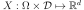
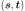
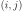
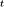

Covariance models¶
We consider  a multivariate
stochastic process of dimension  , where
is an event,
, where
is an event,  is a domain of
is a domain of  ,
,
 is a multivariate index and
.
is a multivariate index and
.
We note  the random variable at
index defined by
and
the random variable at
index defined by
and
 a realization of the process
a realization of the process
 , for a given defined by
, for a given defined by
 .
.
If the process is a second order process, we note:
its mean function, defined by ,
its covariance function, defined by ,
its correlation function, defined for all , by such that for all , .
In a general way, the covariance models write:
where:
is the scale parameter
id the amplitude parameter
is the Cholesky factor of :
The correlation function may depend on additional specific parameters which are not made explicit here.
The global correlation is given by two separate correlations:
the spatial correlation between the components of which is given by the correlation matrix and the vector of marginal variances . The spatial correlation does not depend on . For each , it links together the components of .
the correlation between and which is given by .
In the general case, the correlation links each component to all the components of and ;
In some particular cases, the correlation is such that depends only on the component and that link does not depend on the component
. In that case, can be defined from the scalar function by . Then, the covariance model writes:
API: